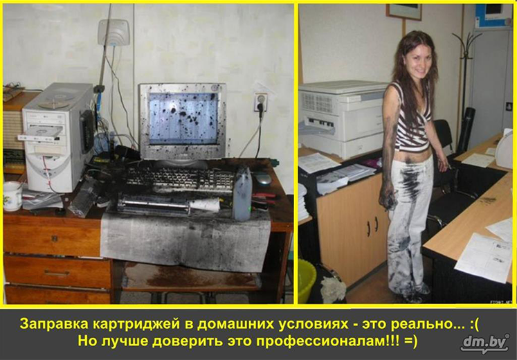

ПН–ПТ: 9:30–19:30
СБ: 10:00–18:00
ВС: выходной
Россия, Чувашская Республика,
г.Чебоксары
ул. Ф.Лукина, д.1
СЕРВИС-ЦЕНТР
РЕМОНТ И ОБСЛУЖИВАНИЕ ЭЛЕКТРОНИКИ

ПН–ПТ: 9:30–19:30
СБ: 10:00–18:00
ВС: выходной
Россия, Чувашская Республика,
г.Чебоксары
ул. Ф.Лукина, д.1
РЕМОНТ И ОБСЛУЖИВАНИЕ ЭЛЕКТРОНИКИ
Большинство людей считают, что их картридж будет работать вечно, достаточно лишь периодически заправлять его. Это мнение ошибочно. Работа принтеров и МФУ - это сложный механизм, выполняющие свои функции в условиях высоких температур. И как у любого механизма с высокой интенсивностью нагрузки, со временем его детали изнашиваются и качество печати становится хуже. Продлить срок службы картриджа, можно следуя нескольким правилам: заправлять с соблюдением специальной технологии и только качественным тонером или чернилами; использовать для печати высококачественную бумагу; если детали картриджа уже износились и требуют замены, то вовремя менять их на детали надежных производителей. Соблюдая эти правила, вы продлите жизнь вашему картриджу и сможете рассчитывать на комфортную и качественную печать. Вам не придется постоянно тратить деньги на новые картриджи. А если вы будете покупать картридж, то это может обойтись вам не дёшево. Заправка же всего 350 рублей. Конечно, вы можете самостоятельно закупить красящий материл и заправить картридж, либо обратиться к более опытным специалистам. Стоит обратить внимание и на красящий материл, потом что изготовляемые, например, тонеры в разных компаниях, имеют разное качество, а еще они могут не подойти для вашего картриджа. При самостоятельной заправке есть минус пролива краски в принтере/МФУ, что поспособствует выходу его из строя, это еще один важный момент, который говорит о том, что лучше обратиться к специалистам.
Существует еще одна причина, по которой картридж следует отдавать на перезаправку в руки специалистов. Это небольшой чип, который может быть блокирующим и неблокирующим процесс печати, в зависимости от производителя. Блокирующий чип не дает печатать даже, если имеется тонер. Обычно блокировка активируется после определенного количества напечатанных страниц.
Не стоит самостоятельно заправлять картриджи, не имея опыта. Это элементарныйпринцип долговечной работы принтера и МФУ.
Профессиональная заправка картриджа производится в несколько этапов. Прежде всего, специалист печатает тестовую копию и диагностирует картридж. В зависимости отрезультатов диагностики картриджа заправляется сразу, или сначала ремонтируется.
При заправке:
* картридж аккуратно разбирается;
* бункер тщательно очищается от остатков тонера;
* очищаются ракель, лезвие дозирования, фотобарабан;
* полируются валы;
* бункер заполняется красящим порошком;
* фотобарабан припудривается специальной присыпкой;
* смазываются шестерни и проверяются уплотнители;
* картридж полностью собирается;
* производится тестовая печать.
Приходите в сервис-центр ANT и мы быстро, качественно и недорого заправим,продиагностируем и в случае необходимости отремонтируем ваш картридж, а также проконсультируем, как правильно пользоваться картриджем, чтобы он служил вам долгои радовал качеством печати.